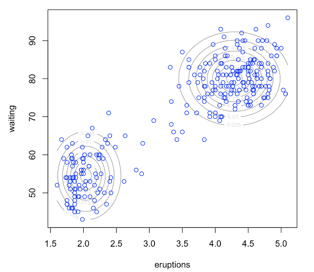
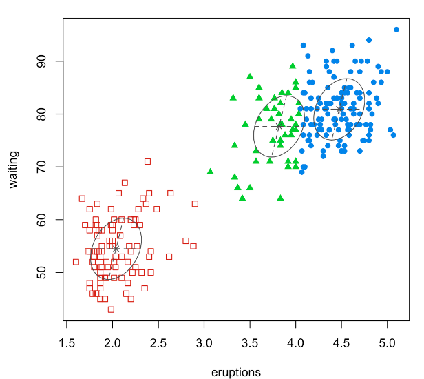

7.1. Model-based Clustering
Model-based clustering involves a process wherein a mixture model is fitted, and each resulting cluster corresponds to a component of that mixture model. For illustration, consider the “Old Faithful Geyser” data, for which you can locate the code on our R code page. This data is two-dimensional. On the left, we fit a mixture model with two Gaussian components, while on the right, the same data is fitted with three normal components.
 {kind=link}
{kind=link}
In essence, clustering is framed as fitting a mixture model to the data, enabling us to understand the distribution of the variable, X. To determine the appropriate number of clusters, or ‘K’, metrics like AIC or BIC can be employed.
However, a primary challenge in model-based clustering, or more generally when fitting a mixture model, is the estimation of the relevant parameters. To address this, the EM (Expectation-Maximization) algorithm is introduced as the primary method for obtaining the Maximum Likelihood Estimation (MLE) of these parameters in mixture models.
It’s worth noting that while our discussion centers on clustering, mixture models are part of a broader class of statistical models known as hierarchical models. The applications of mixture models extend far beyond just clustering.